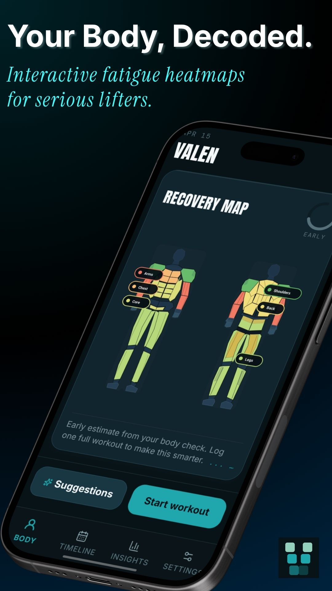

Deep insights
Balance, streaks, consistency, coverage, and biological recovery signals in one screen instead of scattered metrics across five tabs.

Join the latest Android testing build now. iPhone version is on the way.
RECOVERY INTELLIGENCE FOR SERIOUS LIFTERS
Valen turns your training history into a live recovery read, so you can see what is loaded, what is ready, and what deserves patience before you start the next session.

Your training data stays on-device by default.
Cloud backup is optional and only activated when you choose it.
Not just history logs. Valen interprets what your body is carrying today.
SEE WHAT OTHER APPS MISS
Valen goes deeper than broad body-part buckets. Tap into subzone detail, watch where fatigue is actually sitting, and understand what a single shoulder score is made of before you load it again.

METRICS WITH CONTEXT
Logging is only useful if it sharpens the next decision. Valen surfaces the numbers that matter most when you train seriously: estimated strength, recent velocity, progression over time, and what each lift has actually been doing lately.

WHAT VALEN ACTUALLY HELPS YOU DO
Balance, streaks, consistency, coverage, and biological recovery signals in one screen instead of scattered metrics across five tabs.
Valen proposes where to start, what to rotate toward, and when to back off so your weekly planning can evolve with the body you actually have that day.

Move fast when you are in a hurry, or log every set when precision matters. The workflow is designed for both between-set speed and deep post-session detail.

HOW IT WORKS
Start with a body check, a quick session, or a fully logged workout.
Valen recalculates recovery, balance, confidence, and subzone load after every session.
Use the map, insights, and suggestions to decide where today’s best work should go.
VALEN FOR ANDROID
Bring recovery mapping, deep exercise analytics, and smarter next-session guidance into every week you train.